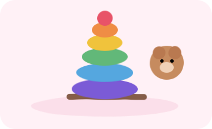
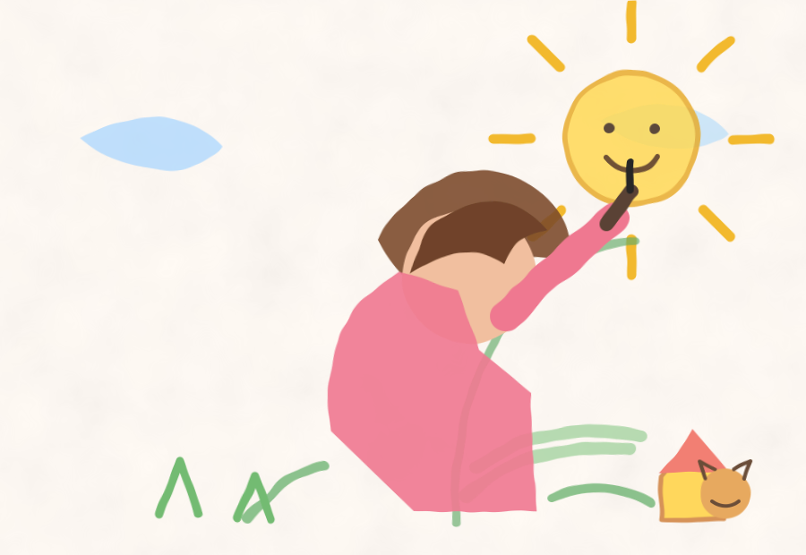
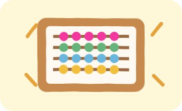
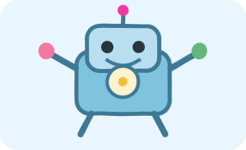
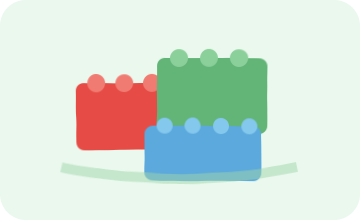
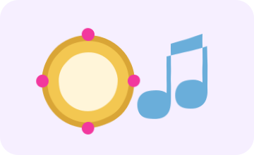
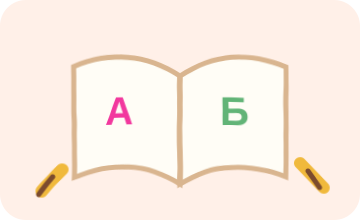
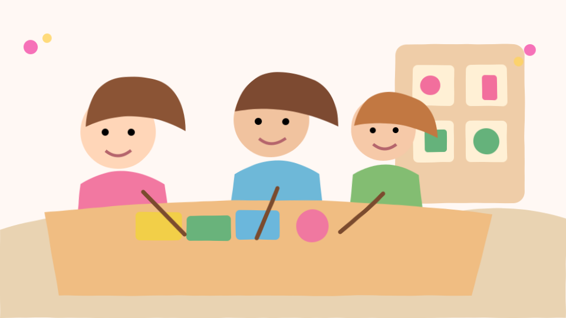
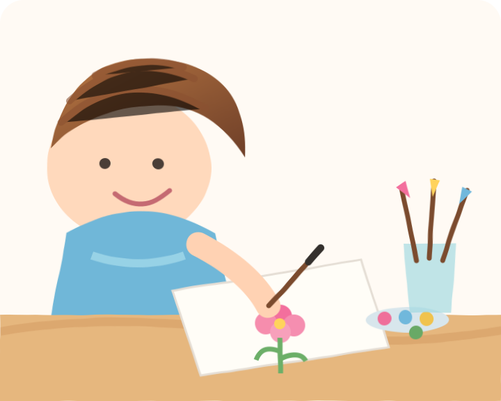

1–3 года
Раннее развитие
Речь, мышление, моторика, музыка, творчество и знакомство с окружающим миром.
Развивающие занятия для детей от 1 до 16 лет. Помогаем раскрывать способности, учиться с интересом и получать удовольствие от новых открытий.

Программы собраны вокруг конкретных возрастных задач — речи, мышления, моторики, творчества, инженерных навыков и подготовки к школе.

Речь, мышление, моторика, музыка, творчество и знакомство с окружающим миром.

Устный счёт, концентрация, память и скорость обработки информации.

LEGO WeDo, первые инженерные задачи, логика и самостоятельная сборка моделей.

Пространственное мышление, мелкая моторика и сюжетное конструирование.

Ритм, звук, движение, слуховое внимание и творческая инициатива.

Базовые учебные навыки, внимание, мышление и спокойный старт школьной жизни.
Небольшие фрагменты с занятий помогают почувствовать атмосферу студии, увидеть педагогов в работе и понять, как дети включаются в процесс.
Смотреть видео во ВКонтакте
▶Как проходят занятияживые фрагменты, эмоции и атмосфера Студии Kids
Студия Kids — это развивающие занятия для детей и родителей. Мы используем современные и классические методики, учитываем индивидуальные особенности ребёнка и создаём комфортную атмосферу для обучения.
Актуальное расписание и наличие мест лучше уточнить перед визитом — группы формируются по возрасту.
Москва, м. Марьина Роща. Здесь проходят занятия для разных возрастных групп, включая ментальную арифметику и робототехнику.
Открыть на карте →Москва, МЦК Ростокино. Здесь проходят развивающие занятия, Lego Land и другие направления по расписанию.
Открыть на карте →Оставьте контакты, возраст ребёнка и желаемое направление. Можно указать удобный филиал и комментарий.